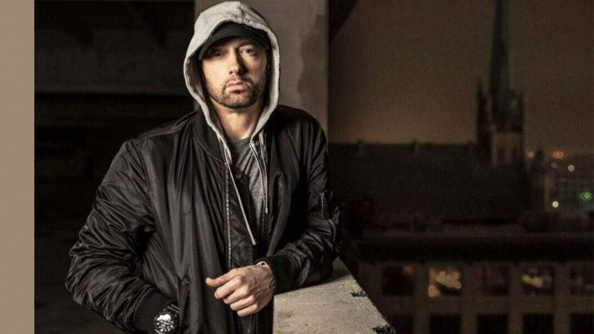
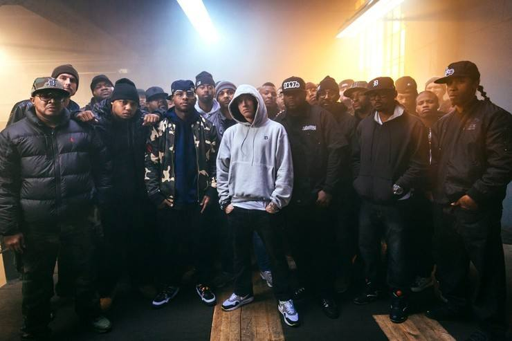

Eminem
Marshall Bruce Mathers III，出生于
1972年10月17日，知名于其艺名埃米纳姆(Eminem)，是一位美國著名饒舌歌手、詞曲作
家、唱片製作人、演員及電影製作人。他一直被認為是嘻哈史上最偉大，最有影響力的饒舌歌手，也被
稱為「饒舌之神」(Rap
God)。他在1997年被饒舌歌手兼词曲製作人Dr.Dre發掘，其後簽約至所屬
的Aftermath唱片公司。在其音樂生涯中，至今共獲得十五次格萊美獎，以及奧斯卡最佳電影歌曲獎項。
重要事件
-
1972-1997：1996年，發行了他的首張專輯《Infinite》,开启嘻哈的新征程。
-
1998-1999: 推出了《The Slim Shady
LP》,成為1999年美國最流行的專輯之一，在年底獲得了鉑金 唱片的銷量。
-
2000-2001: 第二张专辑《The Marshall Mathers
LP》在2000年5月发行，打破了著名美國饒舌歌手史努比狗狗的《Doggy
style》保持的最快銷售嘻哈專輯記錄和小甜甜布蘭妮《...Baby One More
Time》保持的最快銷售個人專輯記錄。
-
2002: 《The Eminem Show》阿姆的第三張主打專輯《The Eminem
Show》在2002年夏天發行，在第一周內賣出了超過一百萬張拷貝，登上唱片銷售榜的第一位，成為又一轟動。
- 2003-2004: 《Encore》
-
2005-2006: 《Curtain Call: The Hits》和《Eminem Presents:The Re-Up》
- 2007-2010：《Relapse》和《Recovery》
- 2012-2013: 《The Marshall Mathers LP 2》
- 2014-2016: 《Shady XV》 和 Southpaw
- 2017-2019：《Revival》 和 《Kamikaze》
- 2020至今：《Music to Be Murdered By》
早年经历
埃米纳姆出生于美国密苏里州圣约瑟夫，父亲在他出生六个月后便放弃了家庭离开，随后跟着母亲多次搬家，不断地转学，靠社会救济维持生计。他从小营养不良，长得比同龄人瘦小，常常成同学欺负、凌辱对象，他跟母亲的关系也很差。9岁时，叔叔罗尼将电影《霹雳舞》的原声带作为生日礼物送给了埃米纳姆，其中一首由Ice-T演唱的说唱歌曲让埃米纳姆第一次接触嘻哈音乐，并产生了兴趣。12岁时，随母亲定居底特律，身处黑人社区，每两三个月就要搬一次家，中学第一天午餐钱就被勒索。
14岁时，埃米纳姆开始表演说唱，使用过 “Manix” 和
“M&M”两个艺名，经常参加隔壁高中组织的即兴首次比赛。因为经常翘课的缘故，埃米纳姆读了两次九年级，在17岁的时候辍学。辍学后，他先是在一条生产线上当工人，后来又做过厨师。与此同时，他以自创的说唱歌曲，在地下乐团获得一定的关注度，加入过几个非正式说唱组织，比如Basement
Productions、New Jacks，后来又加入了Soul Intent二人演唱组。
监制专辑
- 2020年1月17日 《Music to Be Murdered By》 埃米纳姆
- 2019年1月25日《Everythings for Sale》 Boogie
- 2018年8月31日《Kamikaze》埃米纳姆
- 2016年9月23日 《Natural Causes》 斯盖拉·格蕾
-
2015年7月24日《Southpaw (Music from and Inspired by the Motion
Picture)》（《铁拳》电影原声带）
- 2015年4月21日 《Love Story》 Yelawolf
- 2014年11月24日 《Shady XV》 Shady唱片旗下艺人
- 2012年8月28日 《Welcome to:Our House》 Slaughterhouse
- 2011年11月21日 《Radioactive》 Yelawolf
- 2011年6月14日《Hell: The Sequel》 Bad Meets Evil
- 2009年11月9日 《Before I Self Destruct》50美分
- 2007年5月22日 《The County Hound EP》 Ca$his
- 2007年5月21日 《Eminem Presents: The Re-Up》 Shady唱片旗下艺人
- 2006年8月15日 《Second Round's on Me》 Obie Trice
- 2005年12月6日 《Curtain Call: The Hits》埃米纳姆
- 2005年3月3日 《The Massacre》 50美分
- 2004年12月12日 《Loyal to the Game》图派克·夏库尔
- 2004年4月27日 《D12 World》 D12
- 2003年9月23日《Cheers》 Obie Trice
- 2003年2月6日 《Get Rich or Die Tryin'》 50美分
-
2002年10月29日 《8 Mile: Music from and Inspired by the Motion
Picture》（《8英里》电影原声带）
- 2001年6月19日 《Devil's Night》 D12
主要专辑！！
| 发行时间 |
语言 |
发行专辑 |
| 2020-01-17 |
英语 |
Music To Be Murdered By |
| 2018-08-31 |
英语 |
Kamikaze |
| 2017-12-15 |
英语 |
Revival |
| 2013-11-05 |
英语 |
The Marshall Mathers LP 2 |
| 2010-06-18 |
英语 |
Recovery |
| 2009-11-21 |
英语 |
Relapse: Refill |
| 2009-05-15 |
英语 |
Relapse |
| 2005-12-06 |
英语 |
Curtain Call: The Hits |
| 2004-11-12 |
英语 |
Encore |
| 2003-12-23 |
英语 |
The Singles |
| 2002-06-04 |
英语 |
The Eminem Show |
| 2000-05-23 |
英语 |
The Marshall Mathers LP |
| 1999-02-23 |
英语 |
The Slim Shady LP |
| 1997-12-06 |
英语 |
Slim Shady EP |
| 1996-11-12 |
英语 |
Infinite |
生活照


个人生活
家庭
埃米纳姆的父亲叫马歇尔·布鲁斯·马瑟斯二世（2019年6月26日去世），很早就抛弃了家庭。后来，叔叔托德·内尔森成为了埃米纳姆的养父，而埃米纳姆则一直将托德视作亲生父亲。2004年，托德在汽车里饮弹自尽。此外，另一个叔叔罗尼也是埃米纳姆很亲的一个人，他于1993年自杀，对埃米纳姆造成极大的人生冲击。
埃米纳姆与母亲黛比的关系很差。母亲给他留下了“神经质、絮絮叨叨、爱钱如命、嗜毒成瘾”的印象，埃米纳姆还写过歌曲《Kill
You》攻击母亲 。2014年，埃米纳姆在歌曲《Headlights》中向母亲道歉 。
感情
1995年，埃米纳姆与金·马瑟斯生下了女儿海莉·杰德。1999年，埃米纳姆与金在美国密苏里州举行了一个秘密婚礼。2001年，二人离婚，女儿的监护权由二人共享。2006年1月14日，埃米纳姆与金复婚，于同年4月5日再度离婚，二人共同承担抚养女儿海莉的义务。此外，埃米纳姆还抚养了金孪生姐妹的女儿阿莱娜，以及金与另一个男人生的女儿惠特尼。
健康
2005年8月，埃米纳姆被医生诊断出患有睡眠性药物依赖综合症；同月，他因为对安眠药上瘾而不得不进入毒品康复中心进行治疗。2007年12月，因为服用过量美沙酮入院治疗，如果再晚两个小时就医，埃米纳姆将面临死亡；1个月后，再次旧病复发。为了孩子们，他于2008年戒掉了酗酒和药物。